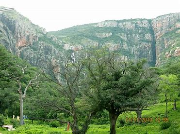
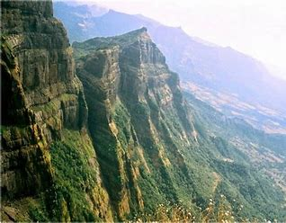

Velikonda Range, range of hills in southeastern Andhra Pradesh state, southern India. They trend north-south and form the eastern flank of the Eastern Ghats, which at that point are strongly folded and faulted. The Velikondas are assumed to have been elevated during the Cambrian Period (about 540 to 490 million years ago). They are relicts of ancient mountains that were eroded and dissected by numerous streams. Rivers navigate through the hills by narrow gaps, usually marked by rapids. The main railway from Chennai to Mumbai (Madras to Bombay) runs along the corridor formed by the Penneru River between the Velikondas and the Palkonda Hills to the south. The Velikondas reach an elevation of 2,500 to 3,000 feet (750 to 900 metres) but are sparsely wooded and almost devoid of human population except for a few scattered groups of Chenchu peoples. The valleys, however, are moderately populated. The narrowness of the corridors through the hills permitted the streams to be dammed and water-storage tanks to be built, making a certain amount of cultivation and irrigation possible. Peanuts (groundnuts) and jowar (grain sorghum) are the main crops.
Velikonda Range

| Velikonda Range | |
|---|---|
|  | |
| Highest Peak | |
| Elevation | 571 m 14°45'0" N and 79°10'0" E |
| Length | 20 mi (32 km) N-W |
| Coordinates | 14°45′N 79°10′E |
| Geography | |
| Location | India |
| Borders on | Andhra Pradesh |